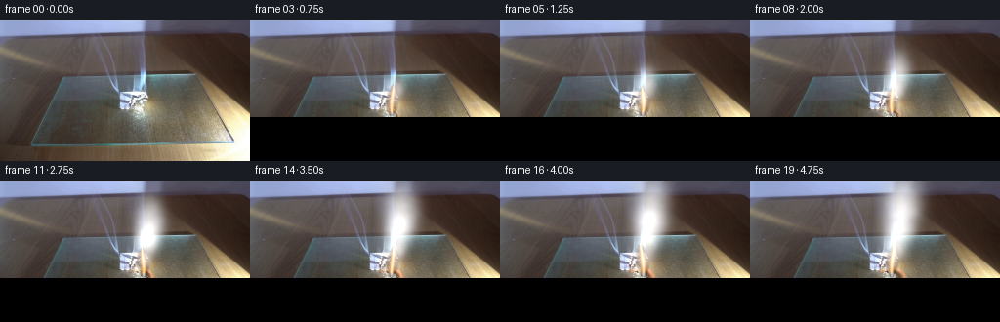
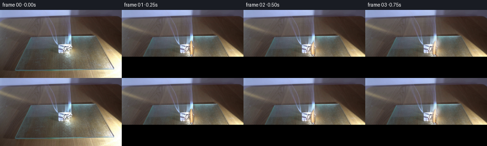
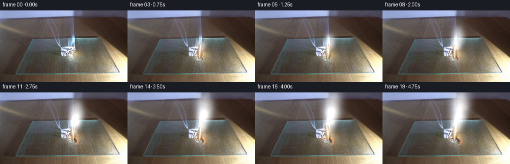

CODING AGENTS AS PIXEL WORLD MODELS
traex/DeepSeek-V4.1-Flash · 0140
点击播放 · 原生 RGB 像素
逐轮保存的候选
回放视频、检查图与代码变化。
每份候选均可单独播放。实际图片检查记录在下方工具轨迹中。
候选 01播放与检查图
点击播放 · 原生 RGB 像素


展开代码变化
--- 上一保存版本
+++ 本次保存版本
@@ -0,0 +1,257 @@
+"""Generate a fixed-camera burning-paper shot from first_frame.png."""
+
+from pathlib import Path
+
+import numpy as np
+from PIL import Image
+from scipy.ndimage import gaussian_filter, map_coordinates
+
+import artifact_io
+
+
+CASE_DIR = Path(__file__).resolve().parent
+WIDTH, HEIGHT = 256, 144
+FRAMES, FPS = 20, 4
+BURN_X, BURN_Y = 145.0, 97.0
+
+
+def smoothstep(edge0, edge1, value):
+ x = np.clip((value - edge0) / (edge1 - edge0), 0.0, 1.0)
+ return x * x * (3.0 - 2.0 * x)
+
+
+def value_noise(rng, height, width, cells):
+ """Smooth, deterministic value noise built from a coarse random grid."""
+ coarse = rng.random((cells + 3, cells + 3)).astype(np.float32)
+ scale_y = height / cells
+ scale_x = width / cells
+ yy = (np.arange(height, dtype=np.float32) + 0.5) / scale_y + 0.7
+ xx = (np.arange(width, dtype=np.float32) + 0.5) / scale_x + 0.7
+ grid_y, grid_x = np.meshgrid(yy, xx, indexing="ij")
+ result = map_coordinates(
+ coarse,
+ [grid_y, grid_x],
+ order=3,
+ mode="reflect",
+ prefilter=True,
+ )
+ lo, hi = np.percentile(result, [2, 98])
+ return np.clip((result - lo) / max(hi - lo, 1e-6), 0.0, 1.0)
+
+
+def fbm(rng, height, width):
+ return (
+ 0.48 * value_noise(rng, height, width, 7)
+ + 0.29 * value_noise(rng, height, width, 15)
+ + 0.16 * value_noise(rng, height, width, 31)
+ + 0.07 * value_noise(rng, height, width, 63)
+ )
+
+
+def make_smoke_puffs(rng):
+ """A continuous, lightly turbulent stream of smoke parcels."""
+ puffs = []
+ for i in range(78):
+ birth = -0.65 + i * 0.074 + rng.uniform(-0.025, 0.025)
+ puffs.append(
+ {
+ "birth": birth,
+ "x": BURN_X + rng.normal(0.0, 2.0),
+ "y": BURN_Y - 9.0 + rng.normal(0.0, 2.1),
+ "vx": rng.uniform(1.4, 4.2),
+ "vy": rng.uniform(12.5, 19.0),
+ "radius": rng.uniform(1.5, 2.7),
+ "growth": rng.uniform(1.45, 2.15),
+ "life": rng.uniform(4.7, 6.2),
+ "phase": rng.uniform(0.0, np.pi * 2.0),
+ "strength": rng.uniform(0.55, 1.0),
+ "elongation": rng.uniform(1.05, 1.55),
+ }
+ )
+ return puffs
+
+
+def smoke_density(t, puffs, noise):
+ density = np.zeros((HEIGHT, WIDTH), dtype=np.float32)
+ yy, xx = np.mgrid[0:HEIGHT, 0:WIDTH].astype(np.float32)
+ for puff in puffs:
+ age = t - puff["birth"]
+ if age <= 0.0 or age >= puff["life"]:
+ continue
+ rise = puff["vy"] * age
+ x = (
+ puff["x"]
+ + puff["vx"] * age
+ + 1.8 * np.sin(1.7 * age + puff["phase"])
+ + 0.55 * age * np.sin(0.75 * age + puff["phase"] * 1.7)
+ )
+ y = puff["y"] - rise
+ if y < -16.0:
+ continue
+ radius = puff["radius"] + puff["growth"] * age
+ rx = radius * (1.05 + 0.12 * np.sin(age + puff["phase"]))
+ ry = radius * puff["elongation"]
+ x0 = max(0, int(x - 3.0 * rx))
+ x1 = min(WIDTH, int(x + 3.0 * rx) + 1)
+ y0 = max(0, int(y - 3.0 * ry))
+ y1 = min(HEIGHT, int(y + 3.0 * ry) + 1)
+ if x0 >= x1 or y0 >= y1:
+ continue
+ sx = xx[y0:y1, x0:x1]
+ sy = yy[y0:y1, x0:x1]
+ g = np.exp(
+ -0.5 * (((sx - x) / rx) ** 2 + ((sy - y) / ry) ** 2)
+ )
+ fade_in = smoothstep(0.0, 0.22, age)
+ fade_out = 1.0 - smoothstep(puff["life"] * 0.55, puff["life"], age)
+ density[y0:y1, x0:x1] += (
+ puff["strength"] * fade_in * fade_out * g
+ )
+ texture = 0.68 + 0.55 * noise
+ density *= texture
+ density = gaussian_filter(density, 0.72)
+ return density
+
+
+def composite_smoke(image, density, t):
+ yy, xx = np.mgrid[0:HEIGHT, 0:WIDTH].astype(np.float32)
+ alpha = 1.0 - np.exp(-0.52 * np.maximum(density - 0.025, 0.0))
+ # The plume starts almost transparent and establishes itself over the first second.
+ alpha *= 0.72 * smoothstep(0.05, 1.0, t + 0.20)
+ # Keep the hottest zone legible.
+ alpha *= 1.0 - 0.28 * np.exp(
+ -0.5 * (((xx - BURN_X) / 8.0) ** 2 + ((yy - 86.0) / 15.0) ** 2)
+ )
+
+ distance_from_fire = np.sqrt(
+ ((xx - BURN_X) / 23.0) ** 2 + ((yy - 91.0) / 31.0) ** 2
+ )
+ warmth = np.exp(-(distance_from_fire**2))
+ smoke_rgb = np.empty_like(image)
+ smoke_rgb[:, :, 0] = 196.0 + 20.0 * warmth
+ smoke_rgb[:, :, 1] = 198.0 + 8.0 * warmth
+ smoke_rgb[:, :, 2] = 202.0 - 4.0 * warmth
+ # A slight bright rim gives the low-resolution plume readable billows.
+ billow = gaussian_filter(np.maximum(density - 0.32, 0.0), 1.25)
+ smoke_rgb += (billow * 13.0)[:, :, None]
+ out = image * (1.0 - alpha[:, :, None]) + smoke_rgb * alpha[:, :, None]
+ return out
+
+
+def char_layer(base, t, noise):
+ yy, xx = np.mgrid[0:HEIGHT, 0:WIDTH].astype(np.float32)
+ grow = smoothstep(0.0, 1.0, t / 5.0)
+ rx = 6.0 + 8.0 * grow
+ ry = 4.5 + 5.5 * grow
+ dx = (xx - (BURN_X - 0.8 * grow)) / rx
+ dy = (yy - (BURN_Y + 0.8 * grow)) / ry
+ irregular = (noise - 0.5) * 0.34
+ radial = np.sqrt(dx * dx + dy * dy) + irregular
+ char = 1.0 - smoothstep(0.55, 1.12, radial)
+
+ r, g, b = base[:, :, 0], base[:, :, 1], base[:, :, 2]
+ paper = smoothstep(5.0, 18.0, r - b) * smoothstep(1.0, 9.0, g - b)
+ paper *= smoothstep(67.0, 76.0, yy) * (1.0 - smoothstep(118.0, 128.0, yy))
+ paper *= smoothstep(100.0, 112.0, xx) * (1.0 - smoothstep(195.0, 215.0, xx))
+ char *= paper
+
+ # Darken toward brittle charcoal, with an irregular warm combustion rim.
+ char_rgb = np.empty_like(base)
+ char_rgb[:, :, 0] = 42.0 + 9.0 * noise
+ char_rgb[:, :, 1] = 31.0 + 7.0 * noise
+ char_rgb[:, :, 2] = 24.0 + 5.0 * noise
+ out = base * (1.0 - 0.72 * char[:, :, None]) + char_rgb * (0.72 * char[:, :, None])
+
+ rim = np.exp(-((radial - 0.92) / 0.16) ** 2) * paper
+ rim *= 0.55 + 0.45 * smoothstep(0.8, 4.8, t)
+ pulse = 0.82 + 0.18 * np.sin(7.3 * t + noise * 3.0)
+ glow_rgb = np.array([255.0, 91.0, 22.0], dtype=np.float32)[None, None, :] * pulse[:, :, None]
+ out = out + (rim * 0.48)[:, :, None] * glow_rgb
+ return out
+
+
+def flame_and_glow(image, t, noise):
+ yy, xx = np.mgrid[0:HEIGHT, 0:WIDTH].astype(np.float32)
+ flicker = 0.92 + 0.08 * np.sin(8.2 * t) + 0.035 * np.sin(17.0 * t + 0.7)
+ height = 36.0 * flicker
+ base_y = BURN_Y + 1.0
+ h = (base_y - yy) / height
+ valid_h = (h >= 0.0) & (h <= 1.0)
+ sway = 1.15 * np.sin(2.7 * t + 0.4) + 0.55 * np.sin(6.1 * t)
+ center = BURN_X + 0.55 + sway * h**1.55 + 1.15 * np.sin(4.8 * t + 4.0 * h)
+ half_width = (
+ 0.8
+ + 7.1 * np.power(np.maximum(np.sin(np.pi * np.clip(h, 0.0, 1.0)), 0.0), 0.62)
+ * (1.0 - 0.24 * h)
+ )
+ boundary_noise = 0.90 + 0.20 * (noise - 0.5)
+ q = np.abs(xx - center) / np.maximum(half_width * boundary_noise, 0.35)
+ body = valid_h & (q < 1.0)
+ soft_body = valid_h * np.clip(1.25 - q, 0.0, 1.0)
+ soft_body *= smoothstep(1.0, 0.91, h)
+
+ core = np.clip(1.0 - q / 0.48, 0.0, 1.0) * valid_h
+ mid = np.clip(1.0 - q / 0.78, 0.0, 1.0) * valid_h
+ base_blue = np.exp(-((h - 0.045) / 0.095) ** 2) * np.clip(1.0 - q / 0.75, 0.0, 1.0)
+
+ outer = np.array([255.0, 78.0, 16.0], dtype=np.float32)
+ amber = np.array([255.0, 166.0, 36.0], dtype=np.float32)
+ hot = np.array([255.0, 239.0, 188.0], dtype=np.float32)
+ blue = np.array([92.0, 153.0, 255.0], dtype=np.float32)
+
+ flame_rgb = outer[None, None, :] * mid[:, :, None]
+ flame_rgb += (amber - outer)[None, None, :] * np.power(mid, 1.5)[:, :, None]
+ flame_rgb = np.where(core[:, :, None] > 0.02, hot * core[:, :, None] + flame_rgb * (1.0 - core[:, :, None]), flame_rgb)
+ flame_rgb = np.where(base_blue[:, :, None] > 0.03, blue * (0.72 * base_blue[:, :, None]) + flame_rgb * (1.0 - 0.72 * base_blue[:, :, None]), flame_rgb)
+ alpha = np.clip(0.72 * soft_body + 0.62 * core, 0.0, 0.94)
+ out = image * (1.0 - alpha[:, :, None]) + flame_rgb * alpha[:, :, None]
+
+ # Warm bloom, strongest at the base and softly reflected in nearby paper.
+ glow = np.exp(
+ -0.5 * (((xx - (BURN_X + 0.4)) / 18.0) ** 2 + ((yy - 91.0) / 22.0) ** 2)
+ )
+ glow *= 0.72 + 0.28 * np.sin(6.4 * t + 0.9) ** 2
+ out += glow[:, :, None] * np.array([25.0, 9.5, 2.0], dtype=np.float32)
+
+ # A few tiny sparks travel just above the burn line.
+ for k in range(7):
+ phase = (t * (0.45 + 0.06 * k) + k * 0.137) % 1.0
+ if phase > 0.48:
+ continue
+ sx = BURN_X + np.sin(k * 4.7 + t * 2.1) * (2.0 + 5.0 * phase)
+ sy = BURN_Y - 4.0 - (16.0 + 3.0 * k) * phase
+ rad = 0.55 + 0.35 * np.sin(k + t * 3.0) ** 2
+ spark = np.exp(-0.5 * (((xx - sx) / rad) ** 2 + ((yy - sy) / (rad * 1.5)) ** 2))
+ spark_alpha = (1.0 - phase / 0.48) * 0.72
+ out = out * (1.0 - spark_alpha * spark[:, :, None])
+ out += spark[:, :, None] * spark_alpha * np.array([255.0, 193.0, 74.0], dtype=np.float32)
+ return out
+
+
+def render_frame(base, t, puffs, noise):
+ image = char_layer(base, t, noise)
+ image = flame_and_glow(image, t, noise)
+ density = smoke_density(t, puffs, noise)
+ image = composite_smoke(image, density, t)
+ return np.clip(image, 0.0, 255.0).astype(np.uint8)
+
+
+def main():
+ base = np.asarray(Image.open(CASE_DIR / "first_frame.png").convert("RGB")).copy()
+ assert base.shape == (HEIGHT, WIDTH, 3)
+
+ rng = np.random.default_rng(140)
+ puffs = make_smoke_puffs(rng)
+ noise_bank = [fbm(rng, HEIGHT, WIDTH) for _ in range(FRAMES)]
+
+ frames = np.empty((FRAMES, HEIGHT, WIDTH, 3), dtype=np.uint8)
+ frames[0] = base
+ for index in range(1, FRAMES):
+ t = index / FPS
+ frames[index] = render_frame(base.astype(np.float32), t, puffs, noise_bank[index])
+
+ artifact_io.save(frames, CASE_DIR)
+
+
+if __name__ == "__main__":
+ main()
候选 02播放与检查图
点击播放 · 原生 RGB 像素

展开代码变化
--- 上一保存版本
+++ 本次保存版本
@@ -178,7 +178,8 @@
h = (base_y - yy) / height
valid_h = (h >= 0.0) & (h <= 1.0)
sway = 1.15 * np.sin(2.7 * t + 0.4) + 0.55 * np.sin(6.1 * t)
- center = BURN_X + 0.55 + sway * h**1.55 + 1.15 * np.sin(4.8 * t + 4.0 * h)
+ h_clip = np.clip(h, 0.0, 1.0)
+ center = BURN_X + 0.55 + sway * h_clip**1.55 + 1.15 * np.sin(4.8 * t + 4.0 * h_clip)
half_width = (
0.8
+ 7.1 * np.power(np.maximum(np.sin(np.pi * np.clip(h, 0.0, 1.0)), 0.0), 0.62)
候选 03播放与检查图
点击播放 · 原生 RGB 像素

展开代码变化
--- 上一保存版本
+++ 本次保存版本
@@ -51,21 +51,21 @@
def make_smoke_puffs(rng):
"""A continuous, lightly turbulent stream of smoke parcels."""
puffs = []
- for i in range(78):
- birth = -0.65 + i * 0.074 + rng.uniform(-0.025, 0.025)
+ for i in range(94):
+ birth = -0.55 + i * 0.060 + rng.uniform(-0.018, 0.018)
puffs.append(
{
"birth": birth,
- "x": BURN_X + rng.normal(0.0, 2.0),
- "y": BURN_Y - 9.0 + rng.normal(0.0, 2.1),
- "vx": rng.uniform(1.4, 4.2),
- "vy": rng.uniform(12.5, 19.0),
- "radius": rng.uniform(1.5, 2.7),
- "growth": rng.uniform(1.45, 2.15),
- "life": rng.uniform(4.7, 6.2),
+ "x": BURN_X + rng.normal(0.0, 2.5),
+ "y": BURN_Y - 10.0 + rng.normal(0.0, 2.2),
+ "vx": rng.uniform(2.3, 5.4),
+ "vy": rng.uniform(11.0, 17.0),
+ "radius": rng.uniform(1.15, 2.25),
+ "growth": rng.uniform(1.25, 1.90),
+ "life": rng.uniform(5.2, 6.8),
"phase": rng.uniform(0.0, np.pi * 2.0),
- "strength": rng.uniform(0.55, 1.0),
- "elongation": rng.uniform(1.05, 1.55),
+ "strength": rng.uniform(0.34, 0.82),
+ "elongation": rng.uniform(1.12, 1.70),
}
)
return puffs
@@ -89,7 +89,7 @@
if y < -16.0:
continue
radius = puff["radius"] + puff["growth"] * age
- rx = radius * (1.05 + 0.12 * np.sin(age + puff["phase"]))
+ rx = radius * (1.04 + 0.14 * np.sin(age + puff["phase"]))
ry = radius * puff["elongation"]
x0 = max(0, int(x - 3.0 * rx))
x1 = min(WIDTH, int(x + 3.0 * rx) + 1)
@@ -107,17 +107,17 @@
density[y0:y1, x0:x1] += (
puff["strength"] * fade_in * fade_out * g
)
- texture = 0.68 + 0.55 * noise
+ texture = 0.44 + 0.94 * noise
density *= texture
- density = gaussian_filter(density, 0.72)
+ density = gaussian_filter(density, 0.92)
return density
def composite_smoke(image, density, t):
yy, xx = np.mgrid[0:HEIGHT, 0:WIDTH].astype(np.float32)
- alpha = 1.0 - np.exp(-0.52 * np.maximum(density - 0.025, 0.0))
+ alpha = 1.0 - np.exp(-0.49 * np.maximum(density - 0.045, 0.0))
# The plume starts almost transparent and establishes itself over the first second.
- alpha *= 0.72 * smoothstep(0.05, 1.0, t + 0.20)
+ alpha *= 0.58 * smoothstep(0.05, 1.25, t + 0.20)
# Keep the hottest zone legible.
alpha *= 1.0 - 0.28 * np.exp(
-0.5 * (((xx - BURN_X) / 8.0) ** 2 + ((yy - 86.0) / 15.0) ** 2)
@@ -128,12 +128,12 @@
)
warmth = np.exp(-(distance_from_fire**2))
smoke_rgb = np.empty_like(image)
- smoke_rgb[:, :, 0] = 196.0 + 20.0 * warmth
- smoke_rgb[:, :, 1] = 198.0 + 8.0 * warmth
- smoke_rgb[:, :, 2] = 202.0 - 4.0 * warmth
+ smoke_rgb[:, :, 0] = 198.0 + 18.0 * warmth
+ smoke_rgb[:, :, 1] = 201.0 + 7.0 * warmth
+ smoke_rgb[:, :, 2] = 205.0 - 4.0 * warmth
# A slight bright rim gives the low-resolution plume readable billows.
- billow = gaussian_filter(np.maximum(density - 0.32, 0.0), 1.25)
- smoke_rgb += (billow * 13.0)[:, :, None]
+ billow = gaussian_filter(np.maximum(density - 0.30, 0.0), 1.35)
+ smoke_rgb += (billow * 9.0)[:, :, None]
out = image * (1.0 - alpha[:, :, None]) + smoke_rgb * alpha[:, :, None]
return out
@@ -141,8 +141,8 @@
def char_layer(base, t, noise):
yy, xx = np.mgrid[0:HEIGHT, 0:WIDTH].astype(np.float32)
grow = smoothstep(0.0, 1.0, t / 5.0)
- rx = 6.0 + 8.0 * grow
- ry = 4.5 + 5.5 * grow
+ rx = 5.2 + 5.8 * grow
+ ry = 4.0 + 4.1 * grow
dx = (xx - (BURN_X - 0.8 * grow)) / rx
dy = (yy - (BURN_Y + 0.8 * grow)) / ry
irregular = (noise - 0.5) * 0.34
@@ -160,13 +160,13 @@
char_rgb[:, :, 0] = 42.0 + 9.0 * noise
char_rgb[:, :, 1] = 31.0 + 7.0 * noise
char_rgb[:, :, 2] = 24.0 + 5.0 * noise
- out = base * (1.0 - 0.72 * char[:, :, None]) + char_rgb * (0.72 * char[:, :, None])
+ out = base * (1.0 - 0.66 * char[:, :, None]) + char_rgb * (0.66 * char[:, :, None])
rim = np.exp(-((radial - 0.92) / 0.16) ** 2) * paper
- rim *= 0.55 + 0.45 * smoothstep(0.8, 4.8, t)
+ rim *= 0.42 + 0.35 * smoothstep(0.8, 4.8, t)
pulse = 0.82 + 0.18 * np.sin(7.3 * t + noise * 3.0)
glow_rgb = np.array([255.0, 91.0, 22.0], dtype=np.float32)[None, None, :] * pulse[:, :, None]
- out = out + (rim * 0.48)[:, :, None] * glow_rgb
+ out = out + (rim * 0.31)[:, :, None] * glow_rgb
return out
候选 04播放与检查图
可观测工具轨迹
实际执行的命令与返回图片。
命令 1exit 0
/bin/bash -c "pwd && rg --files -g '"'!*.pyc'"' -g '"'!__pycache__'"' | sort"
命令 2exit 0
/bin/bash -c "sed -n '1,240p' prompt.txt"
命令 3exit 0
/bin/bash -c "sed -n '1,300p' GENERATION_RULES.md"
命令 4exit 127
/bin/bash -c "file first_frame.png && identify -verbose first_frame.png | sed -n '1,100p'"
命令 5exit 0
/bin/bash -c "sed -n '1,320p' artifact_io.py"
命令 6exit 0
/bin/bash -c "sed -n '1,260p' player_template.html"
命令 7exit 0
/bin/bash -c "python - <<'PY'
from PIL import Image
import numpy as np
im=Image.open('first_frame.png').convert('RGB')
a=np.asarray(im)
print(im.size, im.mode, a.shape, a.dtype)
print('min/max',a.min(axis=(0,1)),a.max(axis=(0,1)),'mean',a.mean(axis=(0,1)))
# basic summaries and edge/color clustering samples
q=(a//16)*16
colors,cnt=np.unique(q.reshape(-1,3),axis=0,return_counts=True)
for i in np.argsort(cnt)[-20:][::-1]: print(colors[i],cnt[i])
PY"命令 8exit 0
/bin/bash -c "python - <<'PY'
from PIL import Image
import numpy as np
from collections import Counter
im=np.asarray(Image.open('first_frame.png').convert('RGB')).astype(float)
# ascii luminance 64x36, chars
lum=im.mean(2)
chars=' .,:;irsXA253hMHGS#9B&@'
for by in range(0,144,4):
row=''
for bx in range(0,256,4):
v=lum[by:by+4,bx:bx+4].mean(); row+=chars[min(len(chars)-1,int(v/256*len(chars)))]
print(f'{by:3d} '+row)
print('\\nHSV extremes:')
import colorsys
mx=im.max(2); mn=im.min(2); sat=(mx-mn)/(mx+1e-6)
for name,mask in [
('red/orange', (im[:,:,0]>120)&(im[:,:,0]>im[:,:,1]*1.25)&(im[:,:,1]>im[:,:,2]*1.2)),
('bright white', (im.min(2)>185)),
('blue', (im[:,:,2]>im[:,:,0]*1.12)&(im[:,:,2]>110)),
('dark', (lum<45)),
('paper beige',(im[:,:,0]>100)&(im[:,:,0]<210)&(im[:,:,1]>80)&(im[:,:,2]<130)&(sat>.1)),
]:
ys,xs=np.where(mask)
print(name, len(xs), 'bbox', (xs.min(),ys.min(),xs.max(),ys.max()) if len(xs) else None, 'centroid',(xs.mean(),ys.mean()) if len(xs) else None)
# quadrant means
for y in range(0,144,18):
print(y, [tuple(np.round(im[y:y+18,x:x+32].mean((0,1))).astype(int)) for x in range(0,256,32)])
PY"命令 9exit 0
/bin/bash -c "python - <<'PY'
try:
import cv2; print('cv2',cv2.__version__)
except Exception as e: print('no cv2',e)
try:
import scipy; print('scipy',scipy.__version__)
except Exception as e: print('no scipy',e)
PY"命令 10exit 0
/bin/bash -c "python - <<'PY'
from PIL import Image
import numpy as np
im=np.asarray(Image.open('first_frame.png').convert('RGB'))
# crop-like zoom as PPM? print colors along rows and locate edges gradients
for y in [45,50,55,60,65,70,75,80,85,90,95,100,105,110,115,120,125,130,135,140]:
row=im[y]
# segment by coarse color change or print every 8
print('y',y, ' '.join(f'{x}:{tuple(row[x])}' for x in range(96,256,12)))
PY"命令 11exit 0
/bin/bash -c "python - <<'PY'
from PIL import Image
import numpy as np
im=np.asarray(Image.open('first_frame.png').convert('RGB'))
for y in [0,12,24,36,48,60,72,84,96,108,120,132,143]:
row=im[y]
# run-length quantized colors, significant changes every >12 in all? print every 16
print('y',y, ' '.join(f'{x}:{row[x,0]:3d},{row[x,1]:3d},{row[x,2]:3d}' for x in range(0,256,16)))
PY"命令 12exit 0
/bin/bash -c "python - <<'PY'
from PIL import Image
import numpy as np
a=np.asarray(Image.open('first_frame.png').convert('RGB')).astype(float)
# categories each 4x4 mean
# d dark, g neutral, b blue/cool, w warm, W bright warm, G bright neutral
for by in range(0,144,4):
row=''
for bx in range(0,256,4):
p=a[by:by+4,bx:bx+4].mean((0,1)); r,g,b=p; mx=max(p); mn=min(p)
if mx<45: c='@'
elif mx<65: c='#'
elif mx<90: c='x'
elif mx<120: c='o'
elif mx<155: c='O'
elif mx<195: c='+'
elif mx<230: c='*'
else: c=' '
# color hue category via symbol
if mx>70:
if b>r+10 and b>g+4: c=c.lower() if c.isupper() else ('b' if c=='o' else c)
elif r>g+8 and g>b+6: c='w' if mx>135 else 'y'
row+=c
print(f'{by:3d}|{row}|')
PY"命令 13exit 0
/bin/bash -c 'command -v chafa || command -v viu || command -v jp2 || command -v img2txt || command -v python'
命令 14exit 0
/bin/bash -c "python - <<'PY'
from PIL import Image
import numpy as np
im=np.asarray(Image.open('first_frame.png').convert('RGB')).astype(np.float32)
# local gradient magnitude
g=np.zeros((144,256),float)
for c in range(3):
gy,gx=np.gradient(im[:,:,c]); g+=(gx*gx+gy*gy)
g=np.sqrt(g)
print('gradient percentiles',np.percentile(g,[50,75,90,95,98,99,99.5,100]))
# top regions by summed gradients over 8x8 cells
cells=[]
for y in range(0,144,8):
for x in range(0,256,8):
cells.append((g[y:y+8,x:x+8].mean(),x,y))
for val,x,y in sorted(cells,reverse=True)[:30]: print(round(val,1),x,y)
PY"命令 15exit 0
/bin/bash -c "python - <<'PY'
from PIL import Image
import numpy as np
im=np.asarray(Image.open('first_frame.png').convert('RGB')).astype(np.float32)
# PCA of all pixels (rgb) to understand palette / lighting
x=im.reshape(-1,3); mean=x.mean(0); cov=np.cov(x.T); vals,vecs=np.linalg.eigh(cov)
print('mean',mean,'eig',vals,'vecs',vecs)
# PCA spatial fit for local 64x64 patches to see depth orientation
for name,(x0,y0,x1,y1) in {'paper':(145,70,200,125),'board':(160,118,250,143),'bg':(20,25,130,50),'center':(100,45,155,95),'flamecand':(120,60,150,95)}.items():
p=im[y0:y1,x0:x1]; x=p.reshape(-1,3); m=x.mean(0); v=np.linalg.eigh(np.cov(x.T))[1][:,-1]
print(name,'mean',np.round(m,1),'axis',np.round(v,3))
PY"命令 16exit 0
/bin/bash -c "python - <<'PY'
from PIL import Image
import numpy as np
im=np.asarray(Image.open('first_frame.png').convert('RGB')).astype(float)
# exact brightest clusters and near-white region map by rows
m=(im.min(2)>200)
for y in range(0,144,4):
xs=np.where(m[y:y+4].any(0))[0]
if len(xs):
# ranges
cuts=np.r_[0,np.flatnonzero(np.diff(xs)>2)+1,len(xs)]
print(y, [(int(xs[a]),int(xs[b-1])) for a,b in zip(cuts[:-1],cuts[1:])])
PY"命令 17exit 0
/bin/bash -c "python - <<'PY'
from PIL import Image
import numpy as np
im=np.asarray(Image.open('first_frame.png').convert('RGB')).astype(float)
# dump 16x16 thumbnails with ANSI 24bit blocks
im=Image.fromarray(im.astype(np.uint8)).resize((64,36),Image.Resampling.BOX)
a=np.asarray(im)
for y in range(36):
s=''
for x in range(64):
r,g,b=a[y,x]; s+=f'\\x1b[48;2;{r};{g};{b}m '
print(s+'\\x1b[0m')
PY"命令 18exit 0
/bin/bash -c "python - <<'PY'
from PIL import Image
import numpy as np
im=np.asarray(Image.open('first_frame.png').convert('RGB')).astype(np.float32)
# Generate candidate line overlay metrics / detect dominant local line segments Hough
import cv2
g=cv2.cvtColor(im.astype(np.uint8),cv2.COLOR_RGB2GRAY)
e=cv2.Canny(g,30,90)
lines=cv2.HoughLinesP(e,1,np.pi/180,threshold=18,minLineLength=12,maxLineGap=5)
for l in sorted(lines[:,0].tolist(),key=lambda p:-(p[2]-p[0])**2-(p[3]-p[1])**2)[:60]:
x1,y1,x2,y2=l; print(l, 'len',round(((x2-x1)**2+(y2-y1)**2)**.5,1))
PY"命令 19exit 0
/bin/bash -c "python - <<'PY'
from PIL import Image
import numpy as np
a=np.asarray(Image.open('first_frame.png').convert('RGB')).astype(float)
# output compressed row colors as Unicode? Make SVG-like color strips text maybe use ANSI at 16x9, enough
# print key points and row profile as ANSI using half blocks, 128x72 effectively
small=np.asarray(Image.fromarray(a.astype(np.uint8)).resize((96,54),Image.Resampling.BOX))
# use fg upper/lower block colors
for y in range(0,54,2):
s=''
for x in range(96):
top=small[y,x]; bot=small[min(y+1,53),x]
s+=f'\\x1b[38;2;{top[0]};{top[1]};{top[2]}m\\x1b[48;2;{bot[0]};{bot[1]};{bot[2]}mâ'
print(s+'\\x1b[0m')
PY"命令 20exit 0
/bin/bash -c "python - <<'PY'
from PIL import Image
import numpy as np
a=np.asarray(Image.open('first_frame.png').convert('RGB')).astype(float)
# exact RGB at flame central region grid
for y in range(50,130,6):
print(y, ' '.join(f'{x}:({a[y,x,0]:.0f},{a[y,x,1]:.0f},{a[y,x,2]:.0f})' for x in range(100,201,10)))
PY"命令 21exit -1
/bin/bash -c "python - <<'PY'
from PIL import Image
import numpy as np
a=np.asarray(Image.open('first_frame.png').convert('RGB')).astype(float)
# Analyze areas manually via 8x8 means and per-cell most saturated pixel
for y in range(40,144,8):
vals=[]
for x in range(96,256,8):
p=a[y:y+8,x:x+8].reshape(-1,3); mx=p.max(1); mn=p.min(1); sat=(mx-mn)/(mx+1)
q=p[sat.argmax()]
vals.append(f'{x}:{int(q[0])},{int(q[1])},{int(q[2])}')
print(y,' '.join(vals))
PY"命令 22exit 0
/bin/bash -c "python - <<'PY'
from PIL import Image
import numpy as np
a=np.asarray(Image.open('first_frame.png').convert('RGB')).astype(float)
for y in range(40,144,8):
vals=[]
for x in range(96,256,8):
p=a[y:y+8,x:x+8].reshape(-1,3); mx=p.max(1); mn=p.min(1); sat=(mx-mn)/(mx+1)
q=p[sat.argmax()]
vals.append(f'{x}:{int(q[0])},{int(q[1])},{int(q[2])}')
print(y,' '.join(vals))
PY"命令 23exit 0
/bin/bash -c "python - <<'PY'
from PIL import Image
import numpy as np
a=np.asarray(Image.open('first_frame.png').convert('RGB')).astype(float)
# blue vs warm projection in rows 48-128, find white/blue translucent glass zone ranges
for y in range(48,129,4):
# strong blue pixels
p=a[y]
m=(p[:,2]>p[:,0]+12)&(p[:,2]>p[:,1]+4)&(p[:,2]>70)
xs=np.where(m)[0]
print(y, (xs.min(),xs.max(),len(xs)) if len(xs) else None)
PY"命令 24exit 0
/bin/bash -c "python - <<'PY'
from PIL import Image
import numpy as np
a=np.asarray(Image.open('first_frame.png').convert('RGB')).astype(float)
# Fit broad object segmentation by color: hue angles & chroma
r,g,b=a[:,:,0],a[:,:,1],a[:,:,2]
mx=a.max(2); mn=a.min(2); chrom=mx-mn
# categorize blue if b-r>10 and b-g>3
blue=(b-r>10)&(b-g>3)
# warm if r-b>15 and g-b>8
warm=(r-b>15)&(g-b>8)
# greenish if g-r>10 and g-b>10
green=(g-r>8)&(g-b>8)
# print run length ranges every 4 rows for these categories
for y in range(0,144,4):
out=[]
for name,m in [('B',blue),('W',warm),('G',green)]:
xs=np.where(m[y:y+4].any(0))[0]
if len(xs):
cuts=np.r_[0,np.flatnonzero(np.diff(xs)>3)+1,len(xs)]
ranges=[(int(xs[aa]),int(xs[bb-1])) for aa,bb in zip(cuts[:-1],cuts[1:]) if xs[bb-1]-xs[aa]>=3]
if ranges: out.append(name+str(ranges))
print(y,' '.join(out))
PY"命令 25exit 1
/bin/bash -c "python - <<'PY'
from PIL import Image
import numpy as np
a=np.asarray(Image.open('first_frame.png').convert('RGB')).astype(float)
# measure boundary of board (bright/neutral region bottom right) along diagonal
# also image gradient orientation map summarized 16x16
import cv2
g=cv2.cvtColor(a.astype(np.uint8),cv2.COLOR_RGB2GRAY).astype(float)
gx=cv2.Sobel(g,cv2.CV_32F,1,0,ksize=3); gy=cv2.Sobel(g,cv2.CV_32F,0,1,ksize=3)
mag=np.sqrt(gx*gx+gy*gy)
for y in range(0,144,12):
print(y, ' '.join(f'{x}:{mag[y:y+12,x:x+12].mean():.0f}' for x in range(0,256,12)))
PY"命令 26exit 0
/bin/bash -c "python - <<'PY'
from PIL import Image
import numpy as np
import cv2
a=np.asarray(Image.open('first_frame.png').convert('RGB')).astype(np.uint8)
g=cv2.cvtColor(a,cv2.COLOR_RGB2GRAY).astype(np.float32)
gx=cv2.Sobel(g,cv2.CV_32F,1,0,ksize=3); gy=cv2.Sobel(g,cv2.CV_32F,0,1,ksize=3)
mag=np.sqrt(gx*gx+gy*gy)
for y in range(0,144,12):
print(y, ' '.join(f'{x}:{mag[y:y+12,x:x+12].mean():.0f}' for x in range(0,256,12)))
PY"命令 27exit 0
/bin/bash -c "python - <<'PY'
from PIL import Image
import numpy as np
a=np.asarray(Image.open('first_frame.png').convert('RGB')).astype(float)
# find local peaks in brightness >190 around center region
m=a.mean(2)
for y in range(50,130):
xs=np.where(m[y]>190)[0]
if len(xs):
print(y, int(xs.min()),int(xs.max()),len(xs), 'max', int(xs[m[y,xs].argmax()]), round(float(m[y,xs].max()),1))
PY"命令 28exit 0
/bin/bash -c "python - <<'PY'
from PIL import Image
import numpy as np
a=np.asarray(Image.open('first_frame.png').convert('RGB')).astype(float)
# print runs of x for every y where near white; restrict center y70-100
for y in range(70,101):
xs=np.where(a[y].mean(1)>170)[0]
if len(xs):
cuts=np.r_[0,np.flatnonzero(np.diff(xs)>1)+1,len(xs)]
print(y,[(int(xs[aa]),int(xs[bb-1])) for aa,bb in zip(cuts[:-1],cuts[1:])])
PY"命令 29exit 0
/bin/bash -c 'command -v ffmpeg || true'
命令 30exit 0
/bin/bash -c "python - <<'PY'
from PIL import Image
import numpy as np
a=np.asarray(Image.open('first_frame.png').convert('RGB')).astype(float)
# candidate flame core: high luminance, low saturation, center bbox
Y=a.mean(2); C=a.max(2)-a.min(2)
for th in [120,150,180,200]:
m=(Y>th)&(C<45)
m[:45]=False; m[110:]=False; m[:,:105]=False; m[:,170:]=False
ys,xs=np.where(m)
print(th,len(xs),(xs.min(),ys.min(),xs.max(),ys.max()), (xs.mean(),ys.mean()))
# rows count flame mask with looser threshold
m=(Y>120)&(C<60); m[:45]=False; m[112:]=False; m[:,:105]=False; m[:,170:]=False
for y in range(45,112,4):
xs=np.where(m[y:y+4].any(0))[0]
print(y,(int(xs.min()),int(xs.max()),int(m[y:y+4].sum())) if len(xs) else None)
PY"命令 31exit -1
/bin/bash -c "python - <<'PY'
from PIL import Image
import numpy as np
a=np.asarray(Image.open('first_frame.png').convert('RGB')).astype(float)
# region stats for broad objects
regions={'top_bg':(0,0,256,12),'top_dark':(160,0,256,16),'paper_left':(0,16,64,64),'paper_mid':(64,16,144,54),'flame':(112,52,155,104),'board_back':(180,50,256,100),'board_front':(200,100,256,144),'bottom_left':(0,120,100,144)}
for n,(x0,y0,x1,y1) in regions.items():
p=a[y0:y1,x0:x1].reshape(-1,3)
print(n,'mean',np.round(p.mean(0),1),'std',np.round(p.std(0),1),'p10',np.percentile(p,10,axis=0).round(0),'p90',np.percentile(p,90,axis=0).round(0))
PY"命令 32exit 0
/bin/bash -c "python - <<'PY'
from PIL import Image
import numpy as np
a=np.asarray(Image.open('first_frame.png').convert('RGB')).astype(float)
regions={'top_bg':(0,0,256,12),'top_dark':(160,0,256,16),'paper_left':(0,16,64,64),'paper_mid':(64,16,144,54),'flame':(112,52,155,104),'board_back':(180,50,256,100),'board_front':(200,100,256,144),'bottom_left':(0,120,100,144)}
for n,(x0,y0,x1,y1) in regions.items():
p=a[y0:y1,x0:x1].reshape(-1,3)
print(n,'mean',np.round(p.mean(0),1),'std',np.round(p.std(0),1),'p10',np.percentile(p,10,axis=0).round(0),'p90',np.percentile(p,90,axis=0).round(0))
PY"命令 33exit 0
/bin/bash -c "python - <<'PY'
from PIL import Image
import numpy as np
a=np.asarray(Image.open('first_frame.png').convert('RGB')).astype(float)
# print coarse ascii with palette hue and value separately, only center-right at 4x4
for by in range(44,132,4):
row=''
for bx in range(96,256,4):
p=a[by:by+4,bx:bx+4].mean((0,1)); r,g,b=p; mx=p.max(); mn=p.min(); chrom=mx-mn
if mx<55: c='@'
elif mx<75: c='#'
elif mx<95: c='8'
elif mx<120: c='o'
elif mx<150: c='O'
elif mx<185: c='+'
elif mx<225: c='*'
else: c='.'
if chrom<8: c=' ' if mx>220 else c
elif b-r>15: c='b' if c not in ' @#' else c
elif r-b>15: c='w' if mx>120 else 'y'
row+=c
print(f'{by:3d}|{row}|')
PY"命令 34exit 0
/bin/bash -c "python - <<'PY'
from PIL import Image
import numpy as np
a=np.asarray(Image.open('first_frame.png').convert('RGB')).astype(float)
# Estimate per-row transition zones using gradient between consecutive 8-pixel means
for y in [10,14,18,22,26,30,34,38,42,46,50,54,58,62,66,70,74,78,82,86,90,94,98,102,106,110,114,118,122,126,130,134,138]:
p=a[y].reshape(32,8,3).mean(1)
# top 8 changes
d=np.linalg.norm(np.diff(p,axis=0),axis=1)
idx=np.argsort(d)[-5:][::-1]
print(y, [(int(i*8),int((i+1)*8),round(float(d[i]),1)) for i in idx])
PY"命令 35exit 0
/bin/bash -c "python - <<'PY'
from PIL import Image
import numpy as np
im=np.array(Image.open('first_frame.png').convert('RGB'))
print('size', im.shape)
print('corners', im[0,0], im[0,-1], im[-1,0], im[-1,-1])
# brightness ascii 64x24
lum=im.mean(2)
for y in range(0,144,6):
row=''
for x in range(0,256,4):
v=lum[y:y+6,x:x+4].mean()
chars=' .:-=+*#%@'
row+=chars[min(9,int(v/256*10))]
print(f'{y:3d} {row}')
print('\\nrow means:')
for y in range(0,144,8): print(y, np.round(im[y:y+8].mean((0,1)),0))
print('\\ncol means:')
for x in range(0,256,16): print(x, np.round(im[:,x:x+16].mean((0,1)),0))
PY"命令 36exit 1
/bin/bash -c 'python generate.py'
命令 37exit 0
/bin/bash -c 'python generate.py'
命令 38exit 0
/bin/bash -c "python - <<'PY'
from PIL import Image
import numpy as np, json
src=np.asarray(Image.open('first_frame.png').convert('RGB'))
frames=[np.asarray(Image.open(f'frames/{i:02d}.png').convert('RGB')) for i in range(20)]
print('first identical',np.array_equal(src,frames[0]))
for i in [0,1,2,4,8,12,16,19]:
a=frames[i].astype(float); d=np.abs(a-src.astype(float))
print(i,'mean',np.round(a.mean((0,1)),1),'changed',np.mean(np.any(a"'!=src,axis=2)),'"'diffmean',round(d.mean(),2),'diffmax',round(d.max(),1))
# bright smoke-ish and warm pixels
print(' warm',np.sum((a[:,:,0]-a[:,:,2]>18)&(a[:,:,0]>145)),'smoke',np.sum((a.mean(2)>145)&(a.mean(2)<225)),'maxlum',a.mean(2).max())
PY"命令 39exit 0
/bin/bash -c "python - <<'PY'
from PIL import Image
import numpy as np
a=np.asarray(Image.open('frames/19.png').convert('RGB')).astype(float)
# ascii luminance and color-class map for final
chars=' .,:;irsXA253hMHGS#9B&@'
for y in range(0,144,4):
row=''
for x in range(0,256,4):
p=a[y:y+4,x:x+4].mean((0,1)); v=p.mean(); c=chars[min(len(chars)-1,int(v/256*len(chars)))]
if p[0]-p[2]>25 and v>100: c='w'
elif p[0]-p[1]>20 and p[1]-p[2]>10 and v>100: c='o'
elif p[2]-p[0]>18: c='b'
row+=c
print(f'{y:3d} {row}')
PY"命令 40exit 0
/bin/bash -c "python - <<'PY'
from PIL import Image
import numpy as np
for idx in [1,4,8,12,16,19]:
a=np.asarray(Image.open(f'frames/{idx:02d}.png').convert('RGB')).astype(float)
print('\\nframe',idx)
for y in range(0,144,8):
print(y,' '.join(f'{x}:{a[y:y+8,x:x+8].mean():.0f}' for x in range(0,256,16)))
PY"命令 41exit 0
/bin/bash -c "python generate.py && python - <<'PY'
from PIL import Image
import numpy as np
src=np.asarray(Image.open('first_frame.png').convert('RGB'))
frames=[np.asarray(Image.open(f'frames/{i:02d}.png').convert('RGB')) for i in range(20)]
print('first identical',np.array_equal(src,frames[0]))
for i in [0,1,2,4,8,12,16,19]:
a=frames[i].astype(float); d=np.abs(a-src.astype(float))
print(i,'mean',np.round(a.mean((0,1)),1),'changed',round(float(np.mean(np.any(a"'!=src,axis=2))),3),'"'diffmean',round(float(d.mean()),2),'diffmax',round(float(d.max()),1),'min',a.min(),'nan',np.isnan(a).sum())
PY"命令 42exit 0
/bin/bash -c "python - <<'PY'
from PIL import Image
import numpy as np
for idx in [1,4,8,12,16,19]:
a=np.asarray(Image.open(f'frames/{idx:02d}.png').convert('RGB')).astype(float)
print('\\nframe',idx)
chars=' .,:;irsXA253hMHGS#9B&@'
for y in range(0,144,4):
row=''
for x in range(0,256,4):
p=a[y:y+4,x:x+4].mean((0,1)); v=p.mean(); c=chars[min(len(chars)-1,int(v/256*len(chars)))]
if p[0]-p[2]>25 and v>100: c='w'
elif p[0]-p[1]>20 and p[1]-p[2]>10 and v>100: c='o'
elif p[2]-p[0]>18: c='b'
row+=c
print(f'{y:3d} {row}')
PY"命令 43exit 0
/bin/bash -c 'python generate.py'
命令 44exit 0
/bin/bash -c "python - <<'PY'
from PIL import Image
import numpy as np
src=np.asarray(Image.open('first_frame.png').convert('RGB'))
frames=[np.asarray(Image.open(f'frames/{i:02d}.png').convert('RGB')) for i in range(20)]
print('first identical',np.array_equal(src,frames[0]))
for i in [0,1,2,4,8,12,16,19]:
a=frames[i].astype(float); d=np.abs(a-src.astype(float)); lum=a.mean(2)
print(i,'mean',np.round(a.mean((0,1)),1),'changed',round(float(np.mean(np.any(a"'!=src,axis=2))),3),'"'diffmean',round(float(d.mean()),2),'lum>150',int((lum>150).sum()),'lum>220',int((lum>220).sum()),'max',round(float(lum.max()),1))
PY"命令 45exit 0
/bin/bash -c "python - <<'PY'
from PIL import Image
import numpy as np
for idx in [8,12,16,19]:
a=np.asarray(Image.open(f'frames/{idx:02d}.png').convert('RGB')).astype(float)
print('\\nframe',idx)
chars=' .,:;irsXA253hMHGS#9B&@'
for y in range(0,144,4):
row=''
for x in range(0,256,4):
p=a[y:y+4,x:x+4].mean((0,1)); v=p.mean(); c=chars[min(len(chars)-1,int(v/256*len(chars)))]
if p[0]-p[2]>25 and v>100: c='w'
elif p[0]-p[1]>20 and p[1]-p[2]>10 and v>100: c='o'
elif p[2]-p[0]>18: c='b'
row+=c
print(f'{y:3d} {row}')
PY"命令 46exit 0
/bin/bash -c "python - <<'PY'
from PIL import Image
import numpy as np
# check temporal correlation / per-frame changed pixel counts and smoke path centroids
prev=None
for i in range(20):
a=np.asarray(Image.open(f'frames/{i:02d}.png').convert('RGB')).astype(float)
if prev is not None:
d=np.abs(a-prev).mean(2)
print(i,'temporal mean',round(float(d.mean()),2),'p>15',round(float((d>15).mean()),3))
prev=a
# output files
import os
for f in sorted(os.listdir('.')):
print(f, os.path.getsize(f) if os.path.isfile(f) else 'dir')
PY"命令 47exit 0
/bin/bash -c "python - <<'PY'
from PIL import Image
import numpy as np
a=np.asarray(Image.open('first_frame.png').convert('RGB')).astype(float)
# identify object masks heuristically, print bounding boxes and sample colors
r,g,b=a[:,:,0],a[:,:,1],a[:,:,2]
Y=a.mean(2); chrom=a.max(2)-a.min(2)
masks={
'glass': (b-r>12)&(Y>90),
'bright_paper': (Y>150)&(r>g-2)&(g>b+5),
'flame_white': (Y>180)&(chrom<55),
'warm_paper': (r-b>12)&(Y>85),
'dark_bg': (Y<55),
}
for name,m in masks.items():
ys,xs=np.where(m)
print(name,len(xs),(xs.min(),ys.min(),xs.max(),ys.max()) if len(xs) else None, np.round(a[m].mean(0),1) if len(xs) else '')
PY"命令 48exit 0
/bin/bash -c "python - <<'PY'
from PIL import Image
import numpy as np
a=np.asarray(Image.open('first_frame.png').convert('RGB')).astype(float)
# row by row find top strong vertical edge around x 140-150 and top bright region bbox
for y in [0,5,10,15,20,25,30,35,40,45,50,55,60,65,70,75,80,85,90,95,100,105,110,115,120,125,130,135,140]:
row=a[y]
# rgb ranges quantized to 8: print color at x=0,32,64,96,128,140,148,156,176,200,224,255
print(y, ' '.join(f'{x}:{tuple(int(v) for v in row[x])}' for x in [0,32,64,96,128,140,148,156,176,200,224,255]))
PY"命令 49exit 0
/bin/bash -c "python -m py_compile generate.py && python - <<'PY'
from pathlib import Path
from PIL import Image
import numpy as np
import json, re
root=Path('.')
files=sorted((root/'frames').glob('*.png'))
assert len(files)==20, len(files)
src=np.asarray(Image.open('first_frame.png').convert('RGB'))
frames=np.stack([np.asarray(Image.open(p).convert('RGB')) for p in files])
assert frames.shape==(20,144,256,3), frames.shape
assert frames.dtype==np.uint8
assert np.array_equal(frames[0],src)
assert np.isfinite(frames).all()
packed=np.load('pixels.npz')['pixels']
assert packed.shape==(144,256,20)
assert packed.dtype==np.uint32
html=(root/'index.html').read_text()
assert 'window.__pixelReady=true' in html and '\"deltas\":[' in html
# Decode the embedded player's first and last frame to ensure the saved packets are valid.
m=re.search(r\"const DATA=(\\{.*\\}),W=DATA\\.width\",html,re.S)
data=json.loads(m.group(1))
import base64
def unpack(s):
b=np.frombuffer(base64.b64decode(s),dtype='<u4')
return b
first=unpack(data['first'])
assert np.array_equal(first, packed[:,:,0].reshape(-1))
cur=first.copy()
for delta in data['deltas']:
packet=unpack(delta)
i=0
while i<len(packet):
start=int(packet[i]); count=int(packet[i+1]); i+=2
cur[start:start+count]=packet[i:i+count]; i+=count
assert np.array_equal(cur,packed[:,:,19].reshape(-1))
print('validated', len(files), 'frames', frames.shape, 'fps=4 duration=5.0s')
print('frame00 exact:', np.array_equal(frames[0],src))
print('changed coverage:', [round(float(np.mean(np.any(frames[i]"'!=src,axis=2))),3) for i in [0,1,5,10,15,19]])
print('"'artifacts:', ', '.join(p.name for p in [root/'generate.py',root/'pixels.npz',root/'index.html',root/'inspection.png',root/'transition_check.png']))
PY"保存候选 4 份；完成命令 49 次；可验证图片返回 0 张。原始 API 响应与完整日志保留在本地。